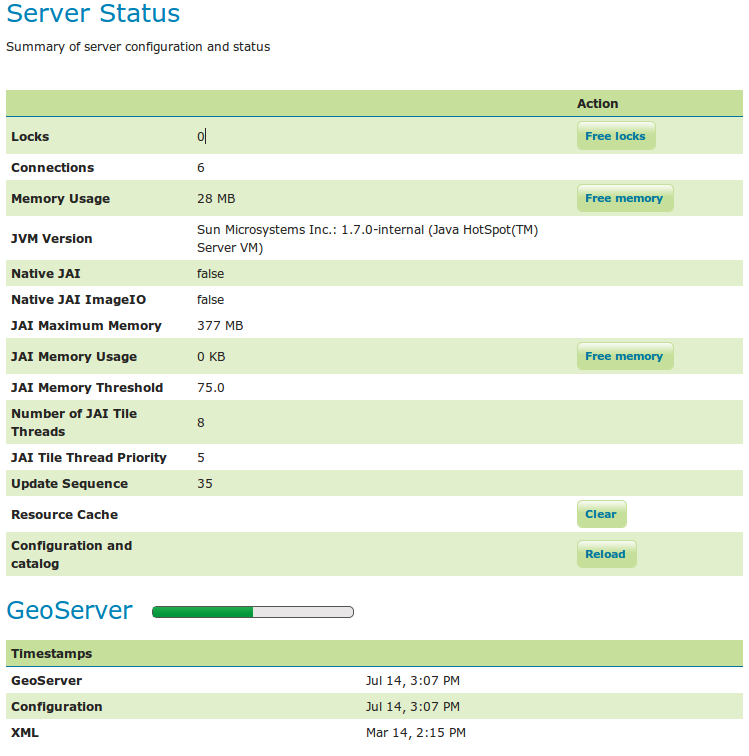

Status¶
서버 상태(Server Status) 페이지에서 서버 설정 파라미터와 실행 상태(run-time status)를 요약해서 볼 수 있습니다. 테스트 작업 환경에서 진단 도구로 유용하게 사용할 수 있습니다.

상태 페이지
Status Field Descriptions¶
다음 표는 현재 상태 지표(current status indicators)를 설명하고 있습니다.
| 옵션 | 설명 |
| Locks | WFS에 한번에 한 명만 피처를 업데이트할 수 있도록 피처를 잠그는 기능이 있습니다. 데이터가 잠가져 있을 때에는 단 한 명의 WFS 편집자만 편집이 가능합니다. 편집된 데이터가 게시(post)됐을 때 잠금이 풀려 다른 WFS 편집자들이 피처를 편집할 수 있게 됩니다. locks 값이 0이라는 것은 모든 잠금이 풀렸다는 의미입니다. locks 값이 0이 아니라면, “free locks” 버튼을 클릭해서 현재 서버가 서비스하고 있는 모든 피처의 잠금을 풀고, locks 값을 0으로 만들어주십시오. |
| Connections | 벡터 저장소(vector stores) 개수를 의미하는데, 4 이상일 경우 접속 가능해집니다. |
| Memory Usage | GeoServer가 현재 사용하고 있는 메모리 용량입니다. 이 표에서는 메모리 28 MB를 사용하고 있습니다. “Free Memory” 버튼을 클릭하면 청소부(garbage collector)를 실행하여 삭제 표시(marked for deletion)된 메모리를 초기화합니다. |
| JVM Version | 서버에서 JVM(Java Virtual Machine) 어느 버전이 실행되고 있는지 보여줍니다. 이 표에서는 Sun Microsystems Inc.의 JVM 1.7.0 버전입니다. |
| Native JAI | GeoServer는이미지 렌더링(image rendering) 및 범위 조작(coverage manipulation)에 Java Advanced Imaging (JAI) 프레임워크를 사용합니다. JAI가 올바르게 설치됐을 경우 true 값이 표시되는데, WCS와 WMS를 더 빠르고 효율적으로 동작하게 해줍니다. |
| Native JAI ImageIO | GeoServer는 래스터 데이터 로드(load) 및 이미지 렌더링 작업에 JAI Image IO (JAI) 프레임워크를 사용합니다. JAI가 올바르게 설치됐을 경우 true 값이 표시되는데, JAI Image I/O는 WCS와 WMS를 더 빠르고 효율적으로 동작하게 해줍니다. |
| JAI Maximum Memory | 타일 캐시(tile cache)에 사용되는 메모리 용량을 바이트(byte)로 표시합니다. 이 표에서는 377 MB입니다. JAI Maximum Memory 값은 0.0에서 {0} 사이여야 합니다. |
| JAI Memory Usage | 타일 캐시에 실제로(Run-time) 사용되고 있는 메모리 용량을 표시합니다. “Free Memory” 버튼을 클릭하면, 타일 캐시 플러싱(flushing)을 실행하여 사용 가능한 JAI memory를 초기화합니다. |
| JAI Memory Threshold | 타일 제거(tile removal) 작업 시 유지해야 하는 캐시 메모리의 퍼센트 값을 말합니다. JAI Memory Threshold 값은 0.0에서 100 사이여야 합니다. |
| Number of JAI Tile Threads | 스케줄러가 타일을 다루려고 사용하는 병렬 스레드(thread)의 개수를 표시합니다. |
| JAI Tile Thread Priority | 일반적인 타일 스케줄러 우선순위를 조정합니다. 우선순위 값은 기본적으로 5에 맞춰져 있으며, 1에서 10사이의 값이어야 합니다. |
| Update Sequence | 서버 설정이 몇 번이나 변경됐는지 그 횟수를 나타냅니다. |
| Resource cache | GeoServer는 데이터 자체를 캐시(cache)하지는 않지만, 저장소 접속 정보, 피처 형식 정의(feature type definitions), 외부 그래픽, 폰트 설정 정보, CRS 설정 정보 등을 캐시하고 있습니다. “Clear” 버튼을 클릭해서 캐시를 강제로 비우고 GeoServer가 저장소를 다시 열고 이미지 및 폰트 정보, ${GEOSERVER_DATA_DIR}/user_projections/epsg.properties에 저장된 CRS 사용자 정의 설정 정보를 다시 읽어오게 할 수 있습니다. |
| Configuration and catalog | GeoServer는 모든 설정 데이터를 메모리에 보관합니다. 어떤 이유로든 (예를 들어 외부 유틸리티가 디스크에 있는 설정을 변경했다든지) 이 설정 정보가 맞지 않게 되면, “Reload” 버튼을 클릭해서 GeoServer가 디스크에서 모든 설정 정보를 다시 읽어오게 할 수 있습니다. |
Timestamps Field Descriptions¶
| 옵션 | 설명 |
| GeoServer | 현재는 의미가 없는 값입니다. 현재 GeoServer가 설치된 일시를 나타냅니다. |
| Configuration | 현재는 의미가 없는 값입니다. 가장 최근 설정이 변경된 일시를 나타냅니다. |
| XML | 현재는 의미가 없는 값입니다. |
이전: Server